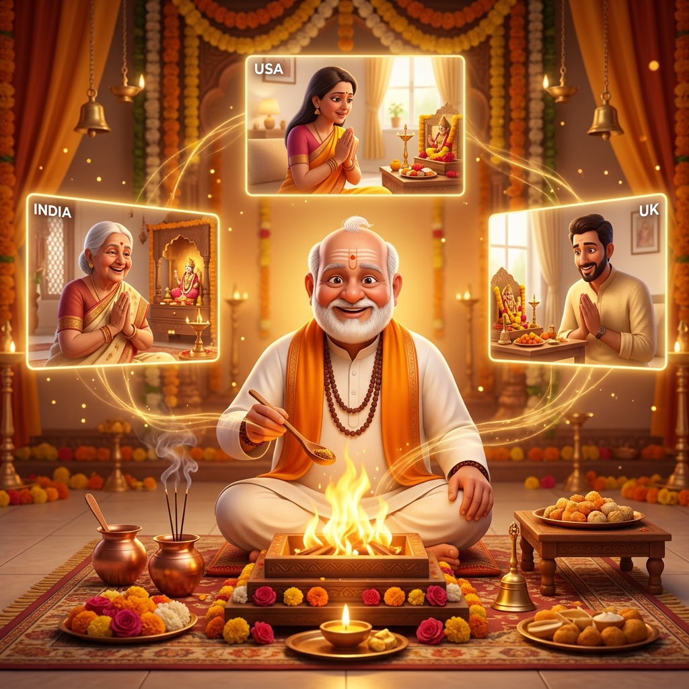
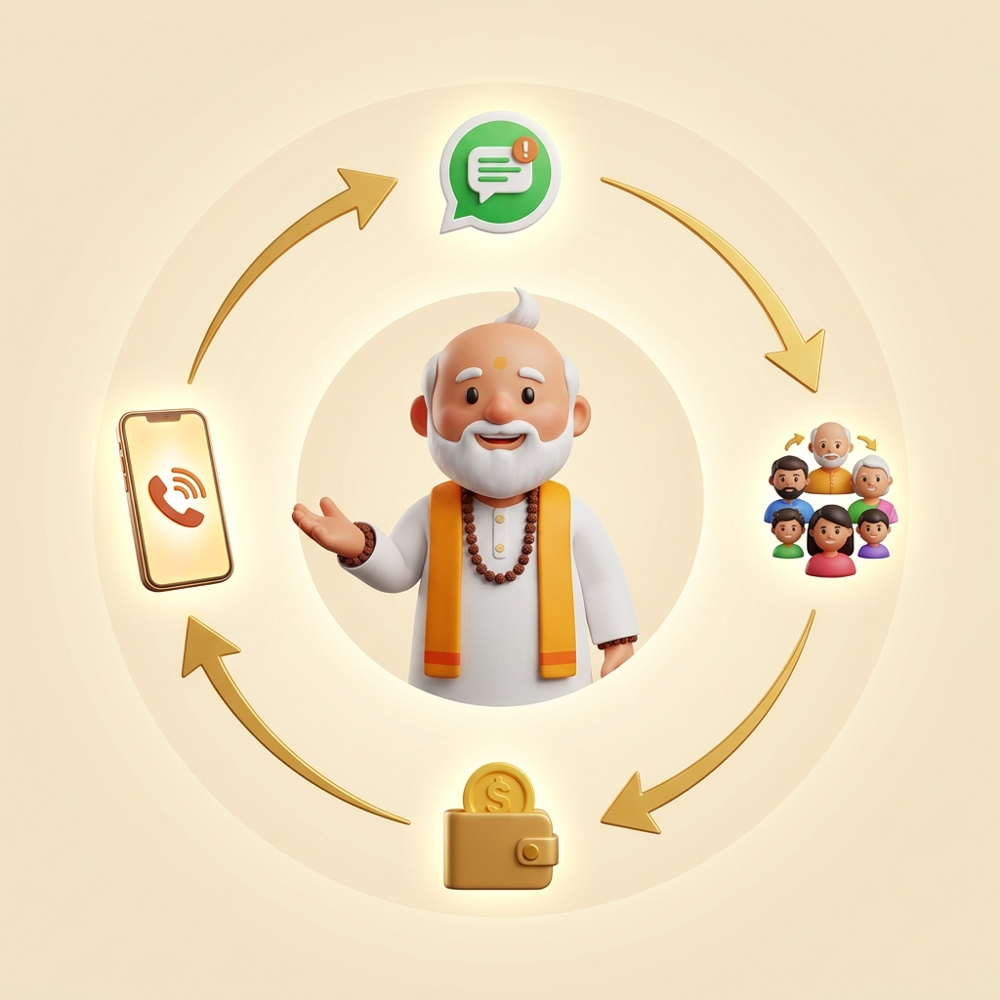

A live multilingual AI Pandit for urgent spiritual guidance and family puja — available anytime, anywhere, in your language.
Smartmurti AI Private Limited · smartmurti.com
A mother in New Jersey. Her child is sick. She needs a pandit — right now. But her local priest is unavailable. Calling India means time-zone friction. YouTube has no real interaction. Astrology apps feel transactional.
35.4M Indian diaspora across 6 continents — far from trusted pandits.
Urgent spiritual needs don't wait for business hours or IST convenience.
Diaspora families pay $200–$500+ per puja session with imported priests.
Family in 3 countries can't participate in the same ritual together.
Trusted & personal, but expensive, location-bound, and hard to schedule across borders.
Free devotional content exists, but it's passive — zero personalization or interaction.
Transactional consultations. No ritual support, no family coordination, no continuity.
Families manually coordinate rituals over group chats — fragmented and stressful.
"Like calling your family pandit — except it's available instantly, speaks your language, costs far less, and lets your whole family join from anywhere in the world."
1:1 live voice & chat sessions for health worries, protection rituals, peace prayers, relationship guidance, and life-direction moments. The fastest trust builder.
Multi-participant live puja rooms — Ganpati Havan, Satyanarayan Puja, Sundarkand Path, Navagraha Shanti. Family in India, USA, and UK all in one sacred ceremony.
Astrology, career, relationship, finance, and education guidance — routed through one Smart Pandit system, not a random marketplace.

India's religious & spiritual services market is valued at $64–70B in 2025, growing at 8–10% CAGR. Online penetration is under 2%. The diaspora segment alone represents a $4B+ opportunity.
Guided mantras, vidhi sequences, and muhurat timing — not generic AI responses.
Live voice in Hindi, English, Tamil, Telugu, and more — not text-only chat.
Multi-participant live puja rooms connecting family across geographies.
Persistent family context — birth charts, ritual history, language preferences, recurring concerns.
"A competitor can copy a bot. They cannot copy a family's spiritual memory with the product."
Not "all spiritual Indians." Not curiosity browsers. Families with real, time-sensitive, emotionally charged needs — and willingness to pay.
Child illness, family health worry — need protective prayers immediately.
Nazar, stress, household tension — need calming guidance now.
Housewarming, festivals, new business — need ritual done correctly.
Relationship stress, career crossroads — need a trusted voice.
Primary buyer: The family organizer (often a mother/spouse) coordinating spiritual needs across countries.
Not subscription-first. Session-based, wallet-driven — matching how families actually use spiritual services.
Pay-per-session 1:1 Smart Pandit consultations. ₹49–₹199 per session.
Premium multi-participant ceremonies. ₹299–₹999 per puja. High emotional value.
Top-up wallet for instant access. Reduces friction for repeat usage.
Subscription layer planned after trust and repeat usage are proven.

Real product on real infrastructure. Website, Android app, and live session rooms operational.
Next.js · React Native (Expo) · Supabase · LiveKit · Google Gemini · ElevenLabs
"Smart Murti becomes the default live spiritual layer for Hindu families — guidance, ritual, memory, and family continuity in one product."
"Talk to Smart Pandit now."